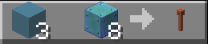

Often around islands, there are hidden shopkeepers selling weapons. These can be anything like hammers that make you slam down, dealing damage to players around you (this item was in Season 5). Also, sometimes these hidden weapons are upgradeable, meaning they can be like this: Hammer [T2]. Now, this isn't always the case, so don't expect every hidden item to be upgradeable, but there might still be a chance.
